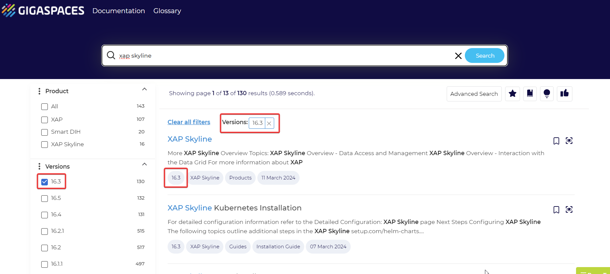
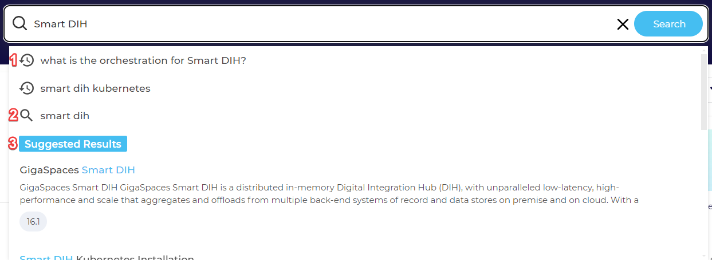
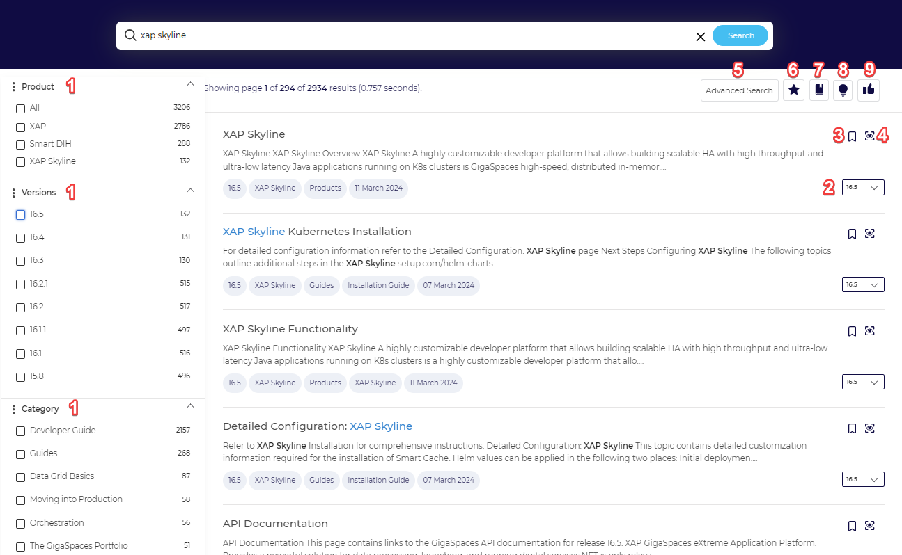
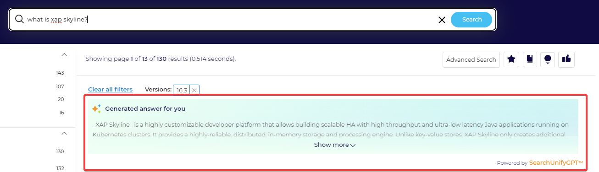
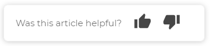

Find the right content with ease! Building a good customer experience does not happen by accident, it happens by design. With this principle in mind,
Below is a breakdown of the improvements you can anticipate.
Upon visiting
If you’re on the homepage of a different version for example, version 16.3, and perform a search on this page, the results will be pre-filtered to show relevant documentation only for the 16.3 version.


As you start typing your query, the search bar will offer the following helpful suggestions:
1. This icon represents previous searches you have made, displaying the most recent at the top.
2. This icon represents queries which are the closest match to your question whilst also taking into account the top queries asked by other users.
3. When you start typing a search query, the Suggested Results drop-down results section represents the top results related to your query. Click the page name to navigate directly to the page.
If the result you are looking for is not included in the Suggest Results, complete typing your query and click Search on the search bar or Enter for a detailed view of the full search results page.
Search algorithms work in the backend to extract the most useful documentation from our repository and rank the results based on their relevance. The search results page also allows you to achieve to the right results.

| 1 | Filters | This is a core differentiator when it comes to the new search experience. You can narrow down the scope of your results by filtering them via product, versions, created date, and the type of documentation (for example, User Guide vs Installation Guide). Once you click a filter, you will notice that the results page is narrowed down to only include results based on your selection. If you want to clear the filters, you can simply deselect them from the left panel OR use the clear all filters option. |
| 2 | Version Control | By default the search renders results for the latest version of the documentation. To view documentation of the version you’re using currently, you can simply click on the version drop down, right next to the search result and select. |
| 3 | Save for Later | Save this single result. It will be displayed in the "Saved Bookmarks" results tab (see 6). |
| 4 | Preview | Clicking the preview button will open the result in a small pane on the search results page. |
| 5 | Advanced Search |
Clicking this button will open a pop-up and allow you to narrow your search down using typical operators (exact phrase, without words, etc.) as well as configure the amount of results per page. For more details, see Advanced Search. Four options are available: 1) With the exact phrase. The query will be searched as it is. A search for "recognise" will not find the documents with the spelling "recognize". This search is also not case-sensitive. 2) With One or more words. All the documents containing even one word from the multiword query will be returned. For example, "fast food" will return documents containing the terms "fast", "food", and "fast food." 3) Without the words. The documents containing the query will be excluded. This is equivalent to adding a hyphen in front of a query in the search box. 4) With the wildcard search. Using search operators in the regular search box, advanced search queries start with an #. This field offers a way to run advanced searches without using #. Write your advanced search expression in this field to use it. |
| 6 | Bookmarks | Clicking the Star will allow you to bookmark up to 20 searches |
| 7 | Saved Bookmarks | Clicking this will reveal all your saved bookmarks |
| 8 | Search Tips | Clicking this button will open a pop-up that lists the top suggestions on how to leverage the search |
| 9 | Feedback | Clicking the thumbs up icon will open a pop up window that allows you to rate your search experience. |
| Similar Searches | Similar Searches, found at the bottom of the search page, analyzes data from multiple users to recommend a search keyword which is related to the query you have performed. The order in which similar search suggestions are presented is based on the relevancy score. The keywords which helped in providing the best results based on relevancy are shown on the top. | |

SearchUnifyGPT™ is a generative AI widget. The widget generates answers in the sense that it does not merely return what is already written in the order it is written in. It scans through the most relevant documentation, presented by the search engine and leverages an LLM (large language model) to supply the answer in a simple, understandable language for users .
The end result is that our users receive a concise answer instead of having to read multiple documents.
SearchUnifyGPT™ is only triggered when your query ends in a (?) and has three or more words. It will then appear on top of the search results page.

In addition to the search page experience feedback, we have also enabled a mechanism to capture feedback on the content. On each page of our documentation, at the right-hand side, you will notice a widget with a Thumbs up and Thumbs down option. Simply click one of the options.